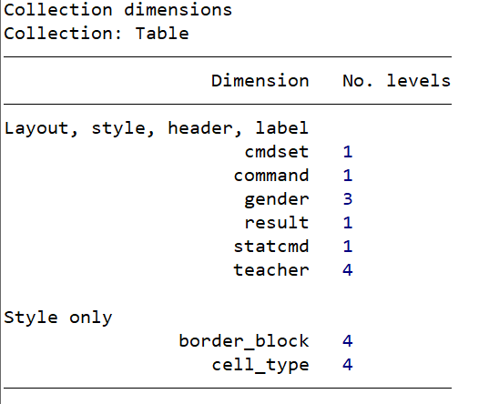
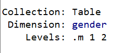
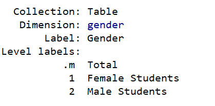
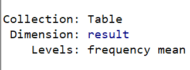
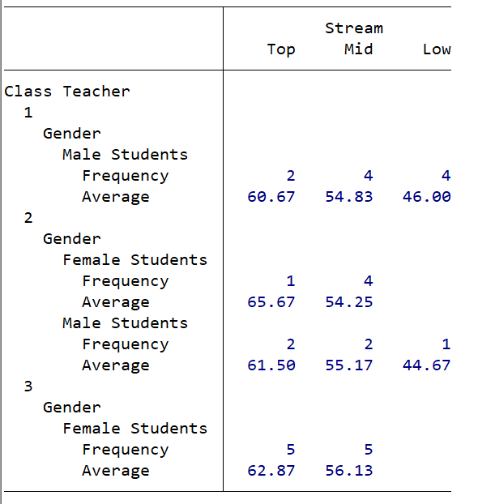

10 A basic example
The table command automatically creates a collection and the first
thing to do is to look at the table dimensions with collect dims
table teacher gender
collect dims
Which produces the table, as we expect and a description of the dimensions of the table:

We can examine a single level:
collect levelsof gender
which produces

A more detailed version will explain what the level .m is:
collect label list gender, all

The total.
The inclusion of total is determined by the form of the command table
we used above.
Notice that we can add labels or modify previously applied labels in our data set, so:
collect label levels gender 1 "Female" 2 "Male", modify
10.1 Adding further dimensions
There are other dimension to our table that we might want to display or tabulate.
First, let us recreate an earlier table with statistics:
table (teacher gender) (stream), nototals statistic(frequency) statistic(mean avxm) nformat(%6.2f mean)
and preview it
collect preview
We see that there is a dimension result listed. This contains the
results of any computations. We can list them with
collect levelsof result
Which produces:

First let us modify the label used for the result of computing the mean in our collection:
collect label levels result mean "Average", modify
and check the result with collect preview:

10.2 Table appearance
Now we will turn to modifying the style of the table by changing the appearance of the borders.
10.3 A more realistic example
We start with a simple table summary
use https://www.ucl.ac.uk/~ccaajim/results
collect clear
sort gender teacher
quietly collect: by gender teacher: summarize maths
collect layout (gender) (teacher) (result[mean])Collection: default
Rows: gender
Columns: teacher
Tables: result[mean]
Table 1: 2 x 4
---------------------------------------------------------
| teacher Two teacher Three teacher One 4
---------------+-----------------------------------------
Female Student | 50.8 100.8
Male Student | 56.6 50.66667 55
---------------------------------------------------------We see immediately from the result that layout takes the results of
the summarize command and makes a table such that levels of gender
are in rows and levels of teacher in columns. The cells of layout are
filled with the computation specified in ’result[]`.
10.3.1 Information about a collection
10.3.1.1 Dimensions of your collection
use https://www.ucl.ac.uk/~ccaajim/results
table (gender) (teacher), ///
statistic(frequency) ///
statistic(percent) ///
statistic(mean maths) ///
statistic(sd maths) ///
nototals ///
nformat(%9.0fc frequency) ///
sformat("%s%%" percent) ///
nformat(%6.2f mean sd) ///
sformat("(%s)" sd) ///
style(table-1)
collect dims | teacher
| teacher One teacher Two teacher Three 4
-----------------+---------------------------------------------------
Gender |
Female Student | 5 10
| 16.67% 33.33%
| 50.80 100.80
| (5.63) (140.40)
|
Male Student | 9 5 1
| 30.00% 16.67% 3.33%
| 50.67 56.60 55.00
| (7.05) (3.13) (.)
---------------------------------------------------------------------
Collection dimensions
Collection: Table
-----------------------------------------
Dimension No. levels
-----------------------------------------
Layout, style, header, label
across 2
cmdset 1
colname 1
command 1
gender 2
result 4
statcmd 4
teacher 4
var 2
Style only
border_block 4
cell_type 4
-----------------------------------------The output from collect dims tells us the names of the dimensions in
out table and the levels associated with each. We can modify dimension
labels:
collect label levels gender 1 "girl" 2 "boy"Having made the modification we can view the change with
collect preview.
To view the list of labels of a dimension we can use, for example
collect label list result, allWhich tells us what has been collect by the result dimension in our table.
The dimension result is not associated with any variable in our data
set, but calculated by the statistic() function in our collection
command.
10.4 Modification 1
We will first improve the display of the decimals in result[] by
adding a style cell specification:
use https://www.ucl.ac.uk/~ccaajim/results
collect clear
sort gender teacher
quietly collect: by gender teacher: summarize maths
collect style cell result[mean], nformat(%5.2f)
collect layout (gender) (teacher) (result[mean])
collect dimsCollection: default
Rows: gender
Columns: teacher
Tables: result[mean]
Table 1: 2 x 4
------------------------------------------------------------
| teacher Two teacher Three teacher One 4
---------------+--------------------------------------------
Female Student | 50.80 100.80
Male Student | 56.60 50.67 55.00
------------------------------------------------------------
Collection dimensions
Collection: default
-----------------------------------------
Dimension No. levels
-----------------------------------------
Layout, style, header, label
cmdset 5
gender 2
program_class 2
result 8
result_type 1
teacher 4
Style only
border_block 4
cell_type 4
-----------------------------------------10.5 Modification 2
We will switch the place of the rows and columns. This involves no recalculation of any kind:
collect style cell result[mean], nformat(%5.2f)
collect layout (teacher) (gender) (result[mean])10.6 Adding a title
collect style cell result[mean], nformat(%5.2f)
collect title "Some summary statistics"
collect layout (teacher) (gender) (result[mean])10.7 Saving labels and styles
Once we like the look of our table, we can type collect label save to save our custom labels, and we can type collect style save to save our custom style.
. collect label save MyLabels, replace (labels from Table saved to file MyLabels.stjson)
. collect style save MyStyle, replace (style from Table saved to file MyStyle.stjson) Then, we can apply our labels and style to future tables using the style() and label() options in our table commands.
. table (sex) (highbp), > statistic(frequency) > statistic(percent) > statistic(mean age) > statistic(sd age) > nototals > nformat(%9.0fc frequency) > sformat(“%s%%” percent) > nformat(%6.2f mean sd) > sformat(“(%s)” sd) > style(MyStyle, override) > label(MyLabels)
| Hypertension No Yes |
|---|
| Sex Male Freq. 2,611 2,304 Percent 25.22% 22.26% Mean (Age) 42.86 52.59 SD (Age) (16.97) (15.88) Female Freq. 3,364 2,072 Percent 32.50% 20.02% Mean (Age) 41.62 57.62 SD (Age) (16.60) (13.26) |
Exporting tables to documents with collect export
We can use collect export to export our table to many different file formats, including Microsoft Word and Excel, HTML 5 with CSS files, Markdown, PDF, LaTeX, SMCL, and plain text.
I have used collect style putdocx in the example below to add a title to our table and to automatically fit the table within a Microsoft Word document. Then, I have used collect export to export the table to a Microsoft Word document.
. collect style putdocx, layout(autofitcontents) > title(“Table 1: Descriptive Statistics by Hypertension Status”)
. collect export MyTable1.docx, as(docx) replace (collection Table exported to file MyTable1.docx)